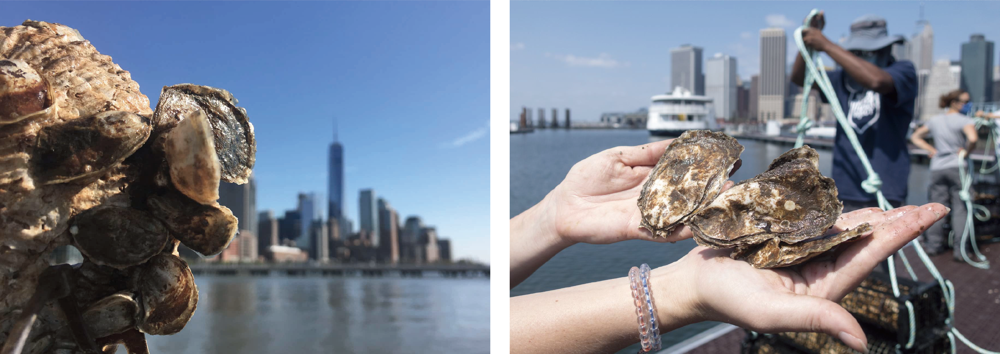

You Are An Oyster.
Pick Your Home!
Need help?
Check theOyster in New York
New York: The Big Oyster
A long time ago, New York Harbor was full of oysters. There were so many that people called the city The Big Oyster. Most of them were Eastern oysters (Crassostrea virginica). These oysters helped clean the water, protect the shoreline, and support marine life. One oyster can filter about 50 gallons of water each day. Oyster reefs made the harbor healthier and stronger.
What is an Eastern Oyster?
The Eastern oyster is a shellfish that lives in salty or brackish water. It has a rough, gray shell and stays in one place, attached to rocks or other oysters. It eats by filtering tiny food from the water. Oysters grow in groups called reefs, which also create safe homes for fish, crabs, and other sea creatures.

Why We Should Care
Oysters are important, but they are in danger. Pollution, too much freshwater, and hard seawalls make it hard for oysters to grow. They need clean, salty water, soft places to settle, and plenty of oxygen. By helping oysters come back, we also help make the water cleaner, the shoreline stronger, and the harbor full of life again.
Methods
Hi humans,
You want to know where oysters like me prefer to live? Alright, I’ll show you how to figure it out.
STEP ONE: gather your clues. I need the right salinity, temperature, oxygen, pH… you name it. So you go out and collect all that juicy environmental data and layer it up.
STEP TWO: make it readable for your machines. Turn those layers into rasters. In order to get from the monitoring points to the entire sea surface, you need Kriging interpolation analysis. By the way, we don't live on the land (ew), so cut all that out first, thanks.
STEP THREE: look at where my friends and I already live. Feed those locations into a MaxEnt model. After some back-and-forth, you’ll get a pretty smart model. Ours got an AUC of 0.91! (Wow)
But rasters are awkward to use on websites. So you need to split the water into little hexagons and gave each one a score. Think of it like Yelp, but for our homes.
And ta-da! You’ve got a map where every hexagon says: “Oysters would love it here” or “No thanks”.
See? It's not so hard.
—Your oyster consultant
Data Source
Oyster Presence Points: Billion Oyster Project
Water Quality: NYC Open Data
Bathymetry: NOAA
Waterfront Condition: Collected manually by Josie and Yuki. Covers selected locations only. (Want to contribute? Submit your own waterfront photo.)

About Oysterbnb
Where should oysters live? Oysterbnb uses real data to help you find the answer, understand what keeps oysters alive, and see why ecosystems need protecting.
Contact us to learn more or get involved.